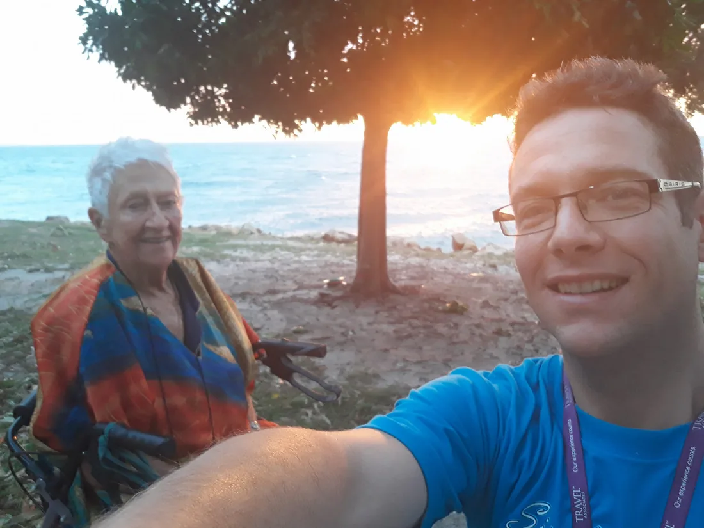
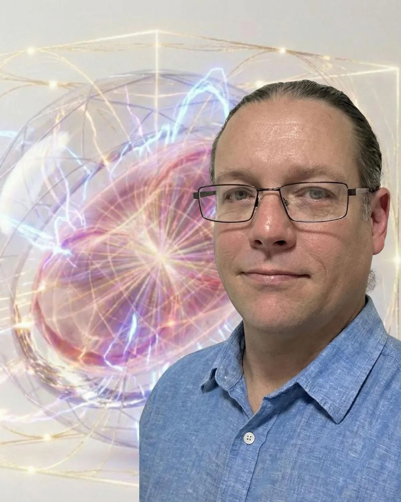

About Luke
Why Strange but True?
Local help from someone who likes making strange new technologies and ideas feel lighter, clearer and more useful.
A local thread, not a straight line.
My connection to North Stradbroke Island / Minjerribah runs through family, time and regular return to country like a boomerang to Amity/Pulan. My grandmother, Constance Millar, was active in island community life and volunteering for around 50 years before she passed away in late February 2025.
I have regularly visited and also resided here on and off for years between travel, work, study, renovations, family responsibilities and periods away. After returning home from India in 2024, the island became the clearest place to gather the useful parts of my life into one practical local service.

The short version
I have taken a winding path, but the offer is simple: bring the confusing device, form, AI tool, website, grant idea, event plan or creative problem, and I will help make it clearer.
Constance
There ain't no pleasing you.
My grandmother Constance liked to sing There Ain't No Pleasing You. At her 90th birthday, that song became more than a family laugh. It became a little reminder about stubborn love, humour, and not giving up on the work your life keeps pointing toward.
Imagine how your own life might have bent differently if you grew up with a grandmother like Constance, turning There Ain't No Pleasing You into something generous: don't settle for a life that betrays the thing you are here to give. Stay constant, keep returning to your world-passion, make something useful, and remember that the selfless part matters.
There Ain't No Pleasing You
Watch on YouTubeImagine this
What might your life become if someone kept reminding you, with love and a bit of cheek, not to give up on the thing you came here to do?
Useful help without the pressure.
A lot of useful technology gets wrapped in stress, jargon or pressure. Strange but True is built around a simpler invitation: bring the confusing thing, the local idea, the half-formed project or the creative spark, and I'll help make it easier to work with.
I have had computers around me for almost my whole life, from Pong, Atari and arcade games, through the gradual arrival of the internet, websites, digital music, massively multiplayer online games, AI tools and the current wave of strange new systems. My love of science fiction probably helped.
Years of learning in adversity, leaving stagnant rooms, trying different work, learning from other perspectives and following the useful thread, all feed into the same practical offer: clearer understanding of devices, calmer systems, better words, better plans and less digital overwhelm.

Not a shopfront
Based in Amity. The shed is for admin and equipment storage, not public visits. You can meet me at the market stall for a free chat, or book mobile help by arrangement across North Stradbroke Island / Minjerribah.
Strange but True
Strange enough to intrigue, true enough to trust.
I usually cut my own path. That has taken me through many jobs, travel, music festivals, websites, writing, AI experiments, creative projects and unfinished formal study where the pace or direction did not fit. The pattern underneath is curiosity, independence and a long-running interest in how technology, creativity and community systems can help people instead of overwhelming them.
My bigger life work points toward what I call Joyful Responsible Abundance: a future where powerful tools are used carefully, playfully and for the benefit of ordinary people, local communities and the living world. That idea can get very large, very quickly, so this website keeps the first step simple.
One small line from an older poem still sits underneath the work: "Choose love, choose infinity and seek deeper meaning." It belongs here as a quiet signpost, not as homework for anyone who just needs practical help.
First step
You do not need to understand my whole life story to ask for help. Start with the practical thing in front of you. We can make that easier first.